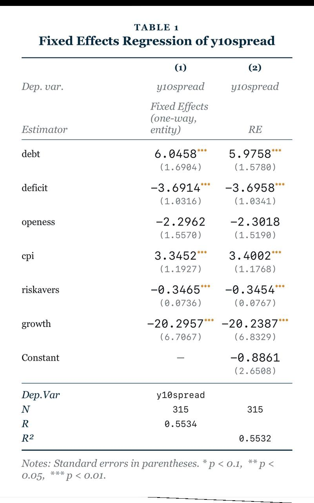

DATA → MODEL → DIAGNOSTICS → EXPORT
Econometrics that moves with your research.
Import economic data, estimate panel and time-series models, inspect diagnostics, run scenario shocks, and export research-ready results from your iPhone.
20 estimatorsCross-section, panel, cointegration, system, and dynamic-panel workflows.
Live and local dataPull public economic series or import your own CSV and XLSX files.
DiagnosticsInspect coefficient tables, confidence intervals, and method-specific tests.
Research exportsMove results into LaTeX, PNG, CSV, Excel, and the next stage of your work.
PUBLICATION-STYLE OUTPUT
Move from model to a table you can scrutinize.
Compare fixed-effects and random-effects estimates, standard errors, significance levels, fit statistics, and model details in one clear research table.

Built for applied work.
OLSFixed EffectsRandom Effects2SLS / IVARDLNARDLFMOLSDOLSVARVECMPMGCS-ARDLDifference GMMSystem GMM